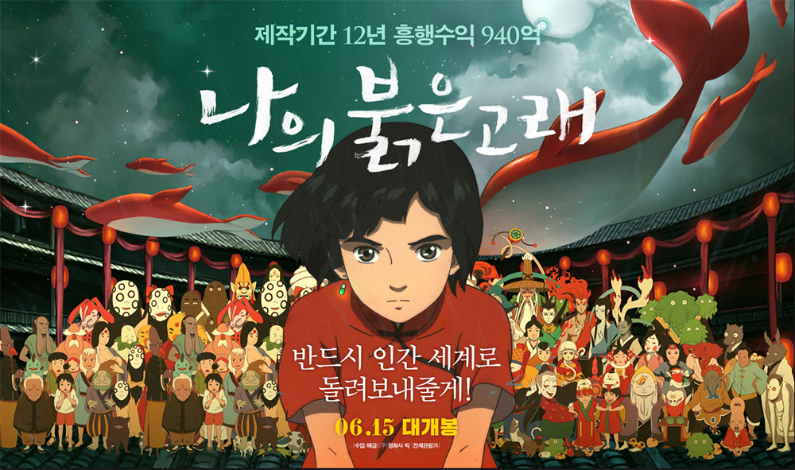

영화
나의 붉은고래
인간과의 접촉이 금지된 세계의 소녀, 인간 소년을 만나다!
소녀 ‘춘’은 성인식을 맞아 고래로 변신해 인간 세상을 탐험하러 나간다. 처음 만나는 낯설고 신비한 풍경을 만끽하던 중 덫에 걸려 목숨을 잃을 뻔 한 ‘춘’은 인간 소년 ‘곤’의 도움으로 겨우 살아난다. 하지만 그녀를 구한 ‘곤’은 그 자리에서 목숨을 잃고 만다. 자신의 세계로 돌아온 ‘춘’은 그를 되살리기 위해 금기를 깨기로 결심한다. ‘곤’의 영혼이 깃든 아기 고래를 사람들 몰래 키워 인간 세상에 환생 시키기로 한 것. 하지만 금기를 어긴 대가로 거대한 재앙이 다가오기 시작하는데… 고래가 된 소년을 인간 세상에 돌려보내기 위한 한 소녀의 기적 같은 모험이 시작된다!